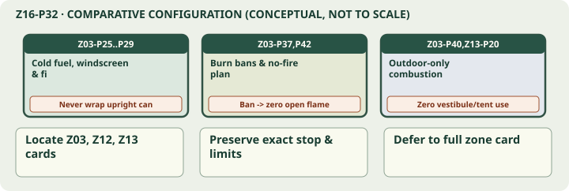

Z16-P32 · Field reference atlas · New manuscript
Camp Stoves, Fuels, Windscreens and Ignition Equipment Index
Cross-index canister, liquid-fuel, alcohol, and solid-fuel stoves with cold-weather performance, windscreen overheating, refueling, and fire-ban rules from Z03.
When it applies · Operating outdoor cooking stoves and ignition gear across seasons.
Equipment · Full offline reader (Z03, Z12, Z13), primary zone cards, and local emergency and agency references.

Actions
- Check outdoor fire restrictions before lighting any open flame (Z03-P37) and carry redundant waterproof ignition (lighters, storm matches, ferrocerium rod) paired with dry tinder while keeping a no-fire emergency fallback (Z03-P03, Z03-P19, Z03-P42).[A01, C01, C03, C16]
- Prevent canister-stove overheating explosions: NEVER wrap a full enclosing windscreen tightly around an upright isobutane canister stove (Z03-P28); switch to inverted-canister or cold-rated liquid-fuel stoves in sub-freezing temperatures (Z03-P25, Z12-P06).[A01, C12, C15]
- Refuel liquid-fuel and alcohol stoves strictly outdoors after flames are completely extinguished and metal is cool (Z03-P29), never priming or cooking inside tents, vestibules, or enclosed rooms (Z03-P40).[A01, C05, C12]
Failure recognition · Wrapping an upright fuel canister tightly, pouring alcohol into a hot burner with invisible flame, or firing stoves inside vestibules causes flash burns, explosions, and CO death.[C05, C12]
Verify · Outdoor level mineral-soil setup, open canister airflow, cool refueling, and complete cold-out extinguishment are confirmed.[C01, C05, C12]
Stop or change course · Stop using any stove showing fuel leaks, erratic yellow flaring, or hot canister walls; let cool completely and switch to no-fire plans.[C12, C16]
Evidence and editorial notes
- A01 · FEMA / Ready.gov · Make a Plan (current web edition)
- Section: Cross-zone emergency prioritization and stop-threshold preservation · Conditions: Synthesizing Z01-Z15 emergency decision summaries in Z16
Support: Condensed emergency references must retain exact life-safety priorities, evacuation triggers, and call-911 thresholds from upstream primary guidance.
Limitations: Any summary omitting an upstream exception, stop rule, or specialist hold is invalid and must defer to the full zone card. · Conflicting evidence: None noted.
Editorial note: Governs Z16 emergency cross-reference fidelity. · Specialist reviewer: Emergency management and editorial QA reviewer
Primary source · checked 2026-11-24 - C01 · Minnesota DNR · Fire Danger and Burning Restrictions (current web edition; verify at use)
- Section: Fire danger and burning restrictions map and links · Conditions: Current Minnesota location, date and jurisdiction
Support: Check current restrictions and local authority requirements before lighting.
Limitations: Restrictions can change daily with humidity, wind, and drought; verify immediately before use. · Conflicting evidence: None; local jurisdiction always supersedes general notes.
Editorial note: Mandatory legal check before any live fire card. · Specialist reviewer: Fire prevention and local land management
Primary source · checked 2026-11-24 - C03 · USDA Forest Service / Smokey Bear · Smokey Bear’s Campfire Safety Guide (agency PDF)
- Section: Build your campfire > Tinder, kindling, fuel · Conditions: Outdoor authorized campfire
Support: Dry tinder, small kindling and larger fuel serve different roles. Gather materials before ignition. Avoid accelerants.
Limitations: Species availability and moisture content vary by season and local collection rules. · Conflicting evidence: None; separates material function from unverified species claims.
Editorial note: Used to stage three-tier fuel geometry without prescribing specific live trees. · Specialist reviewer: Fire prevention
Primary source · checked 2026-11-24 - C05 · CPSC · Portable Heaters and Camping Equipment (current web edition)
- Section: Carbon monoxide poisoning from portable camping equipment · Conditions: Tents, campers, vehicles and other enclosed spaces
Support: Fuel-burning camping equipment can lead to fatal carbon monoxide buildup in enclosed spaces.
Limitations: High altitude increases incomplete combustion and CO production. · Conflicting evidence: None; aligns with CDC-CO and NPS guidance.
Editorial note: Hard-stop prohibition against indoor/vestibule/tent combustion. · Specialist reviewer: Carbon monoxide safety and emergency medicine
Primary source · checked 2026-11-24 - C12 · NPS · Forces and Tools (current web edition)
- Section: Background and Procedure > Bow Drill · Conditions: Interpretive demonstration using known materials
Support: Reciprocating motion turns a spindle against a hearth. Friction heats wood dust until it can sustain an ember.
Limitations: Moisture, resinous wood, poor notch geometry, or physical fatigue can prevent ember formation. · Conflicting evidence: Does not guarantee ignition in emergency field conditions; conceptual/supervised training only.
Editorial note: Clearly distinguishes cold mechanism instruction from field-validated emergency ignition. · Specialist reviewer: Fire prevention and mechanism reviewer
Primary source · checked 2026-11-24 - C15 · NPS · Wildland Fire Safety (current web edition)
- Section: Wildland Fire Safety > Campfires and Stoves · Conditions: Outdoor cooking with portable liquid or canister stoves
Support: Operate stoves on level cleared ground away from tents and dry fuels, cool completely before refueling, and move away from any spilled fuel before lighting.
Limitations: Fuel canisters behave differently in cold weather and high elevation; follow manufacturer limits. · Conflicting evidence: None; aligns with CPSC-C and USFS-FIRE.
Editorial note: Governs stove setup, refueling isolation, and spill failure recognition. · Specialist reviewer: Portable appliance safety and fire prevention
Primary source · checked 2026-11-24 - C16 · CDC · Carbon Monoxide Poisoning Basics (current web edition)
- Section: Carbon Monoxide Poisoning Basics > Sources and Prevention · Conditions: Any enclosed or semi-enclosed structure, garage, porch, tent, or vehicle
Support: Never burn charcoal, operate camp stoves, or run fuel-burning heaters inside homes, garages, tents, or vehicles even with doors or windows partly open.
Limitations: Vent cracks and open garage doors do not prevent lethal CO accumulation. · Conflicting evidence: Refutes dangerous myth that cracking a tent vent or garage door makes indoor combustion safe.
Editorial note: Hard-stop rule across all Z02 ventilation and Z03 combustion cards. · Specialist reviewer: Carbon monoxide safety and emergency medicine
Primary source · checked 2026-11-24
Source lineage · New manuscript (Z16 P20 equipment index) · Classification · New manuscript.